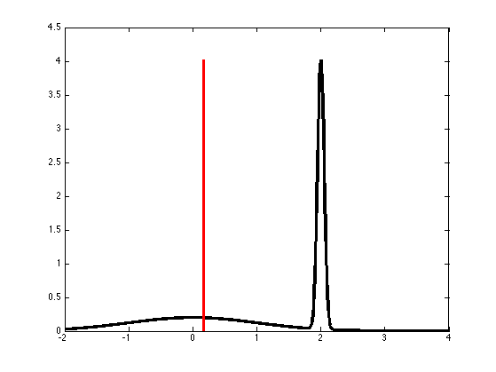

Bimodal Spike Demo
% This file is from pmtk3.googlecode.com mu = [0 2]; sigma = [1 0.05]; w = [0.5 0.5]; xs = (-2:0.01:mu(2)*2)'; p = w(1)*gaussProb(xs,mu(1),sigma(1).^2) + w(2)*gaussProb(xs,mu(2),sigma(2).^2); figure; plot(xs, p,'k-','linewidth',3) mu = mean(xs .* p); hold on h=line([mu mu], [0 max(p)]); set(h, 'linewidth', 3, 'color', 'r') printPmtkFigure bimodalSpike